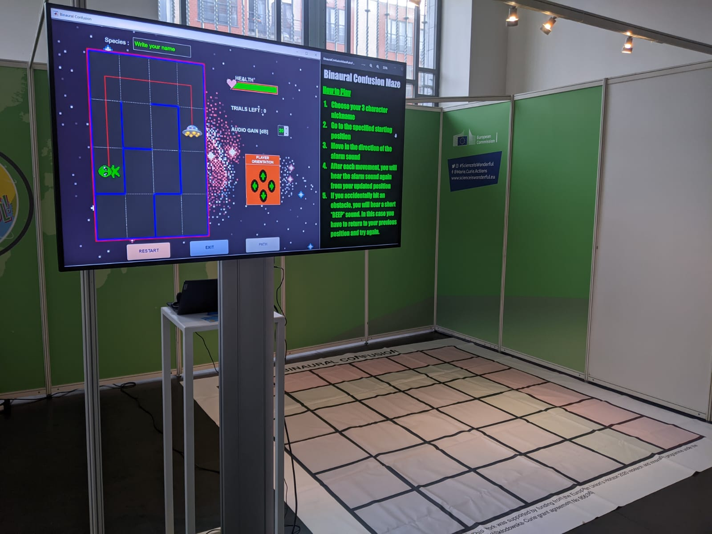

The binaural maze was divided into two parts. The first part took place in front of a large TV screen, where we would explain how humans localise sounds in space and introduce the idea and rules of the game, with visual aids. This was typically very flexible in format, given the range of ages and knowledge about sound. Once we felt that the group we were dealing with was warmed up and comfortable with the idea of spatial audio, we introduced the binaural maze game and its rules.
In this demonstration, the player navigates a virtual maze only using audio cues, while seeing empty tiles on a floor map. The audio cues were either from the right, left, in front, or behind. The premise was gamified by having the goal of the binaural maze game be to reach a spaceship lost in space. The sound we used for the audio cues was a spaceship alarm, which helped to tie the elements of the story together. Everytime the player took a step in the maze, the sound would play again with an adjusted cue, guiding the player towards the end. Three other wireless headphones were made available for spectators to follow the progress of the player, while being able to see the maze on the TV screen. This demo was incredibly well received, both by children and adults. Everyone seemed to have fun enjoying the game and the difficulty was at an adequate level: challenging enough in the right circumstances, while also allowing players with less of an understanding to be guided through. We had a number of interesting conversations with teenagers and adults afterwards about the nature of ‘binaural confusion’ and how we as humans perceive sounds in space. It made us realise that the practical communication skills we learned the day before were indeed very important: keep it simple for everyone to enjoy, but deep enough for someone with interest to follow-up on their curiosity.